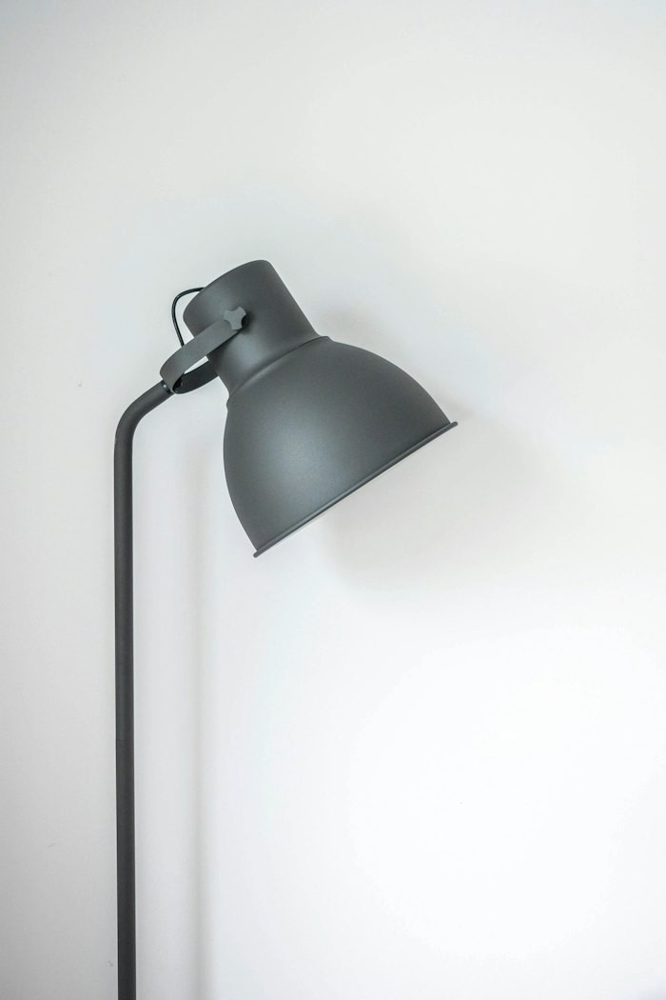
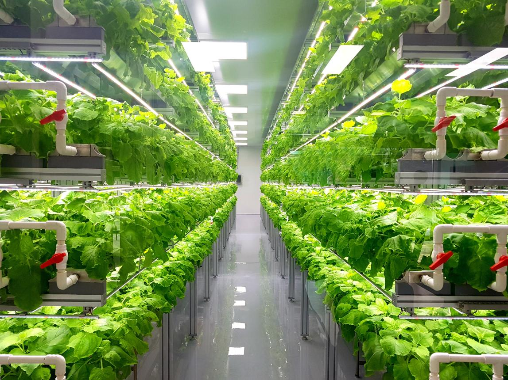

01
Home Hydroponics
Grow herbs and leafy greens at home with suitable hydroponic growing systems.
Discover Systems ↗Discover innovative hydroponic and vertical farming solutions designed for modern homes, gardens and commercial growing spaces.

Explore different ways to grow fresh plants using modern soil-free and space-saving techniques.
Grow herbs and leafy greens at home with suitable hydroponic growing systems.
Discover Systems ↗
Make use of vertical space to grow more plants in compact environments.
Discover Systems ↗
Explore scalable growing solutions for greenhouses and commercial projects.
Explore Solutions ↗
Whether you are a beginner or an experienced grower, the right equipment and growing methods can help you create a productive green space.
Recirculating hydroponic systems can reduce water use compared with some traditional growing methods.
Explore vertical systems and compact kits for suitable indoor and outdoor spaces.
Find growing products, useful guides and support for your gardening journey.
Browse essential product categories for building and maintaining your hydroponic garden.

Lighting solutions for indoor plants.
Explore ↗
Support healthy plant development.
Explore ↗
Use your growing space efficiently.
Explore ↗
Get started with home growing.
Explore ↗Start with the basics and build your growing experience one step at a time.
Choose a suitable location and decide which plants you would like to grow.
Select a suitable growing kit, lighting and equipment for your needs.
Monitor water, nutrients, lighting and plant health regularly.
Observe plant growth, learn from experience and harvest when your crops are ready.
Sustainable farming is about making thoughtful choices. Explore growing systems that can use space efficiently and manage water and nutrients carefully.
Explore Farming Articles ↗Monitor water quality and reuse water where your system safely allows it.
Consider vertical growing layouts for suitable compact spaces.
Plan your growing supplies and care routine to help avoid unnecessary waste.
Discover the experiences and goals of people interested in growing greener.
"I wanted to learn about growing herbs at home. Having the right equipment and clear instructions makes the process easier to understand."
"Vertical gardening is an interesting way to explore growing more plants in a smaller area. Planning the space is an important first step."
"Learning about water quality, nutrients and lighting helped me understand the important parts of maintaining a growing system."
Need help exploring the right growing products or farming solutions? Get in touch with HydroFarm.